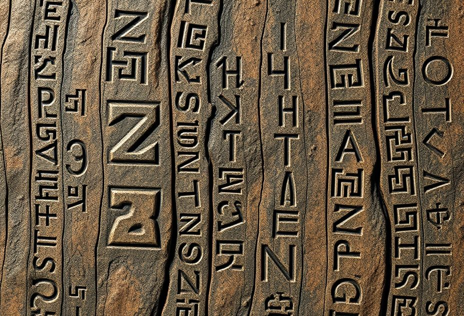

The Æsir - The Norse Gods
Meet the powerful deities of the Norse pantheon

Odin Allfather
Domains: Wisdom, War, Death, Poetry, Magic
Symbols: Ravens (Huginn & Muninn), Wolves, Valknut, Gungnir spear
The one-eyed seeker of wisdom who sacrificed his eye for knowledge and hung himself from Yggdrasil to discover the runes.
Click to learn more →
Thor Thunderer
Domains: Thunder, Strength, Protection, Fertility
Symbols: Mjölnir hammer, Goats, Oak trees, Thor's hammer pendant
The red-bearded protector of Midgard and humanity. Wielder of the mighty hammer Mjölnir and defender against giants.
Click to learn more →
Frigg Queen
Domains: Marriage, Motherhood, Prophecy, Hearth
Symbols: Spinning wheel, Keys, Falcon feathers
Odin's wife and queen of the Æsir. Mother of Baldr and keeper of domestic wisdom and protective magic.
Click to learn more →
Asgard
The Realm: Home of the Æsir gods and golden halls
Features: Valhalla, Rainbow Bridge, Divine Halls
The shining realm of the gods, connected to all nine worlds through Yggdrasil and accessible via the rainbow bridge Bifröst.
Explore Asgard →
Sacred Rituals
Traditional ceremonies to honor the gods
Blót Ceremony
The cornerstone ritual of Norse paganism - an offering ceremony to honor the gods.
Basic Blót Steps:
- Prepare your offering (mead, ale, bread, meat)
- Create sacred space (light candles, burn incense)
- Call upon the god(s) you wish to honor
- Make your offering with intention
- Share in community or personal reflection
- Pour libation or place offering outdoors
Sumbel
A ritualized drinking ceremony of toasts, oaths, and boasts.
Sumbel Rounds:
- First Round: Toast the gods (Odin, Thor, Freyr)
- Second Round: Honor ancestors and heroes
- Third Round: Personal oaths, boasts, or memories
- Pass the horn clockwise around the circle
- Speak from the heart when it's your turn
Galdr Practice
The chanting or singing of runes and sacred poems for magical purposes.
Galdr Techniques:
- Choose your runes or Eddic poem
- Enter meditative state
- Chant the sounds with proper pronunciation
- Visualize the rune shapes or meanings
- Feel the vibrations in your body
- Close with gratitude to Odin
Seasonal Celebrations
Honor the turning wheel of the year with traditional festivals.
Major Celebrations:
- Dísablót: Winter celebration of female spirits
- Sigurblót: Spring victory celebration
- Midsummer: Peak of light and fertility
- Vetrnáttablót: Winter nights harvest festival
- Yule: Twelve-day winter solstice celebration
Prayers & Invocations
Sacred words to commune with the Æsir
Prayer to Odin
Seeker of wisdom and wielder of Gungnir,
Grant me knowledge in my seeking,
Courage in my battles,
And wisdom in my choices.
May the ravens bring you word of my deeds,
Allfather, hear my call."
Prayer to Thor
Protector of Midgard and friend of mankind,
With Mjölnir in hand you guard us from giants,
Grant me your strength and protection,
Shield me from chaos and harm,
Red-beard, hear my call."
Rune Chant
Fehu Uruz Thurisaz Ansuz Raidho Kenaz
Gebo Wunjo Hagalaz Nauthiz Isa Jera
Eihwaz Perth Algiz Sowilo Tiwaz Berkana
Ehwaz Mannaz Laguz Ingwaz Dagaz Othala
By Odin's discovery, these runes I sing."
Ancestor Invocation
Your blood flows in my veins,
Your wisdom guides my steps,
Your courage strengthens my heart.
In Valhalla you feast with heroes,
Remember your children in Midgard below."
Daily & Weekly Practices
Integrate Norse spirituality into your life
Rune Study
Daily practice with the Elder Futhark for divination, meditation, and magical work.
- Draw a daily rune for guidance
- Meditate on rune meanings
- Practice rune casting layouts
- Create runic talismans
Eddic Study
Read and contemplate the ancient Norse texts for wisdom and inspiration.
- Study the Hávamál (Odin's wisdom)
- Read the Völuspá (prophecy of the world)
- Learn stories from the Prose Edda
- Memorize favorite passages
Household Shrine
Create a sacred space in your home for daily offerings and prayers.
- Images or statues of chosen gods
- Offering bowl for mead/water
- Candles and incense
- Runes or Thor's hammer
Honor Code
Live by the nine noble virtues and Norse ethical principles.
- Courage in facing challenges
- Truth in speech and deed
- Honor in all relationships
- Hospitality to guests
- Self-reliance and strength
Learning Resources
Deepen your understanding of Norse paganism
Essential Books
- The Prose Edda by Snorri Sturluson
- The Poetic Edda (various translations)
- The Road to Hel by H.R. Ellis Davidson
- Norse Mythology by Neil Gaiman
- The Way of Fire and Ice by Ryan Smith
Practical Guides
- Nordic Runes by Paul Rhys Mountfort
- Taking Up the Runes by Diana Paxson
- Essential Asatru by Diana Paxson
- Northern Mysteries & Magick by Freya Aswynn
Historical Sources
- Saxo Grammaticus - Gesta Danorum
- Adam of Bremen - Church History
- Ibn Fadlan - Travel Accounts
- Various Sagas (Icelandic literature)
Modern Communities
- Local Ásatrú groups and kindreds
- Online forums and Discord servers
- Pagan festivals and gatherings
- Academic Norse studies programs
⚠️ Important Notes
Norse paganism is a reconstructionist religion based on historical research and personal spiritual practice. Always approach with respect for both historical accuracy and individual beliefs. Be aware that some symbols have been misappropriated by hate groups - true Norse paganism welcomes all people who approach with honor and good intentions.